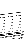

Next: 2.6 Running examples
Up: 2 Installation
Previous: 2.4 Libraries
Contents
Subsections
There are a few adjustable parameters in Modules/parameters.f90.
The
present values will work for most cases. All other variables are dynamically
allocated: you do not need to recompile your code for a different system.
At your option, you may compile the complete QUANTUM ESPRESSO suite of programs
(with make all), or only some specific programs.
make with no arguments yields a list of valid compilation targets.
Here is a list:
- make pw produces PW/pw.x
.x calculates electronic structure, structural optimization, molecular dynamics, barriers with NEB.
- make ph produces the following codes in PH/
for phonon calculations:
- .x: Calculates phonon frequencies and displacement patterns,
dielectric tensors, effective charges (uses data produced by .x).
- dynmat.x: applies various kinds of Acoustic Sum Rule (ASR),
calculates LO-TO splitting at
= 0
in insulators, IR and Raman
cross sections (if the coefficients have been properly calculated),
from the dynamical matrix produced by .x
- q2r.x: calculates Interatomic Force Constants (IFC) in real space
from dynamical matrices produced by .x on a regular q-grid
- matdyn.x: produces phonon frequencies at a generic wave vector
using the IFC file calculated by q2r.x; may also calculate phonon DOS,
the electron-phonon coefficient
, the function
F(
 )
)
- lambda.x: also calculates
and
F()
,
plus Tc
for superconductivity using the McMillan formula
- make d3 produces D3/d3.x:
calculates anharmonic phonon lifetimes (third-order derivatives
of the energy), using data produced by .x and .x (USPP
and PAW not supported).
- make gamma produces Gamma/phcg.x:
a version of .x that calculates phonons at
= 0
using
conjugate-gradient minimization of the density functional expanded to
second-order. Only the
(
= 0
) point is used for Brillouin zone
integration. It is faster and takes less memory than .x, but does
not support USPP and PAW.
tem make pp produces several codes for data postprocessing, in
PP/ (see list below).
- make tools produces several utility programs in pwtools/ (see
list below).
- make pwcond produces PWCOND/pwcond.x
for ballistic conductance calculations.
- make pwall produces all of the above.
- make ld1 produces code atomic/ld1.x for pseudopotential
generation (see specific documentation in atomic_doc/).
- make upf produces utilities for pseudopotential conversion in
directory upftools/.
- make cp produces the Car-Parrinello code CPV/cp.x
and the postprocessing code CPV/cppp.x.
- make all produces all of the above.
For the setup of the GUI, refer to the PWgui-X.Y.Z /INSTALL file, where
X.Y.Z stands for the version number of the GUI (should be the same as the
general version number). If you are using the CVS sources, see
the GUI/README file instead.
The codes for data postprocessing in PP/ are:
- pp.x extracts the specified data from files produced by .x,
prepares data for plotting by writing them into formats that can be
read by several plotting programs.
- bands.x extracts and reorders eigenvalues from files produced by
.x for band structure plotting
- projwfc.x calculates projections of wavefunction over atomic
orbitals, performs Löwdin population analysis and calculates
projected density of states. These can be summed using auxiliary
code sumpdos.x.
- plotrho.x produces PostScript 2-d contour plots
- plotband.x reads the output of bands.x, produces
PostScript plots of the band structure
- average.x calculates planar averages of quantities produced by
pp.x (potentials, charge, magnetization densities,...)
- dos.x calculates electronic Density of States (DOS)
- epsilon.x calculates RPA frequency-dependent complex dielectric function
- pw2wannier.x: interface with Wannier90 package
- wannier_ham.x: generate a model Hamiltonian
in Wannier functions basis
- pmw.x generates Poor Man's Wannier functions, to be used in
DFT+U calculations
- pw2casino.x: interface with CASINO code for Quantum Monte Carlo
calculation
(http://www.tcm.phy.cam.ac.uk/~mdt26/casino.html).
See the header of PP/pw2casino.f90 for instructions on how to use it.
Note about Bader's analysis: on
http://theory.cm.utexas.edu/bader/ one can find a software that performs
Bader's analysis starting from charge on a regular grid. The required
"cube" format can be produced by QUANTUM ESPRESSO using pp.x (info by G. Lapenna
who has successfully used this technique). This code should perform
decomposition into Voronoi polyhedra as well, in place of obsolete
code voronoy.x (removed from distribution since v.4.2).
The utility programs in pwtools/ are:
VdW/ contains the sources for the calculation of the finite (imaginary)
frequency molecular polarizability using the approximated Thomas-Fermi
+ von Weizäcker scheme, contributed by H.-V. Nguyen (Sissa and
Hanoi University). Compile with make vdw, executables in
VdW/vdw.x, no
documentation yet, but an example in examples/example34.
Next: 2.6 Running examples
Up: 2 Installation
Previous: 2.4 Libraries
Contents
Paolo Giannozzi
2010-05-07